Токио · Уэно · музей
Токийский национальный музей в Уэно: шесть зданий, 89 национальных сокровищ и сад с чайными домиками
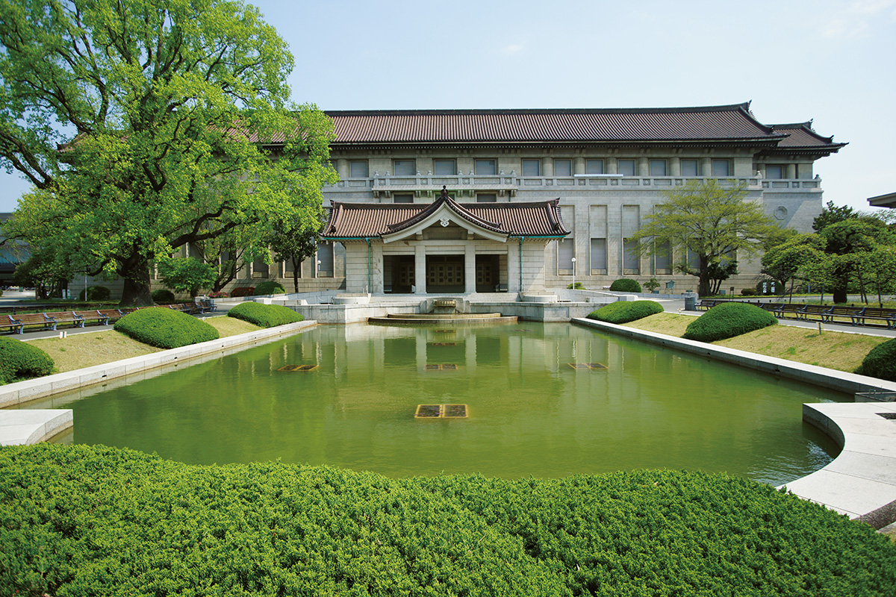
В парке Уэно много музеев, но заметнее всех Токийский национальный музей, у которого самая долгая история в Японии. В шести его зданиях постоянно выставлено около 3000 предметов, и каждый визит выходит немного другим: экспозицию меняют почти каждую неделю.
История
Музей, которому больше 150 лет
Началом музея считают 1872 год. Тогда Бюро музеев министерства просвещения провело первую выставку в зале Тайсэйдэн храма Конфуция Юсима Сэйдо. Музей задумывали не только как хранилище: он должен был знакомить страну с новыми знаниями и технологиями. Образцом служил лондонский Музей Южного Кенсингтона, нынешний Музей Виктории и Альберта, и в проекте были зоопарк, ботанический сад и библиотека.
В 1876 году парк Уэно передали музею, и в 1882 году там открылось новое здание, которое спроектировал Джозайя Кондер (1852–1920), британский архитектор, учивший японцев строить в европейском стиле. Оно встало на месте главной резиденции храма Канъэй-дзи. Дальше были тяжёлые годы: Великое землетрясение Канто 1923 года повредило здание, во время Тихоокеанской войны коллекцию вывозили из Токио, музей не раз переходил из ведомства в ведомство и менял названия. Нынешнее имя, Токийский национальный музей, он носит с 1952 года, а в 2022 году отметил 150 лет.
В разные годы музеем руководили заметные люди. В 1889 году художественный отдел возглавил Тэнсин Окакура (1863–1913), искусствовед, который много сделал для сохранения японского искусства, а в 1917 году директором стал писатель Огай Мори (1862–1922). Самой посещаемой выставкой в истории музея стала «Мона Лиза» 1974 года: на неё пришли 1,51 млн человек.
Задача, которую музей ставит перед собой, звучит просто: хранить культурное наследие и показывать его людям. Собрание насчитывает около 120 000 предметов (2022). Среди них 89 национальных сокровищ и 648 важных культурных ценностей, и это самая большая коллекция национальных сокровищ в стране: почти каждое десятое из 902 сокровищ среди произведений искусства и ремёсел хранится здесь.
Главное здание
От керамики дзёмон до гравюр Эдо
Главное здание, Хонкан, стоит прямо напротив главных ворот. Его построили в 1938 году по проекту архитектора Дзина Ватанабэ (1887–1973): бетонный корпус под японской черепичной крышей считается образцом так называемого стиля «императорской короны», и здание охраняется как важная культурная ценность.
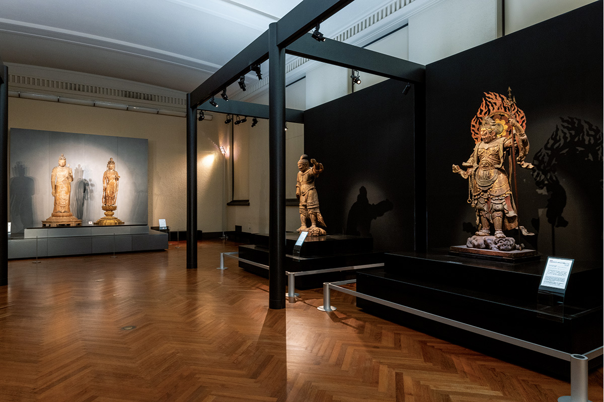
Второй этаж выстроен как прогулка по истории японского искусства. В залах с 1-го по 10-й можно пройти от керамики эпохи Дзёмон через буддийское и придворное искусство эпохи Хэйан, монохромную живопись Камакуры и Муромати, утварь для чайной церемонии и росписи эпохи Момояма к гравюрам укиё-э и нарядам эпохи Эдо. Первый этаж устроен по темам: скульптура, мечи, лаки, искусство нового времени. Здесь много материалов о культуре айнов и Рюкю, и эта часть собрания важна далеко за пределами Японии.
«В залах второго этажа с 1-го по 10-й можно проследить японское искусство от эпохи Дзёмон до эпохи Эдо. Во 2-м зале, зале национальных сокровищ, экспозицию меняют примерно раз в две недели или в месяц, так что за год здесь можно увидеть 13 национальных сокровищ»
сотрудник музея
Постоянную экспозицию в музее называют не «постоянной», а «общей выставкой культуры». Многие предметы нельзя долго держать на свету, поэтому почти каждую неделю в каком-нибудь зале что-то меняют, больше 300 раз в год. Чтобы увидеть все сокровища, нужно приходить снова и снова.
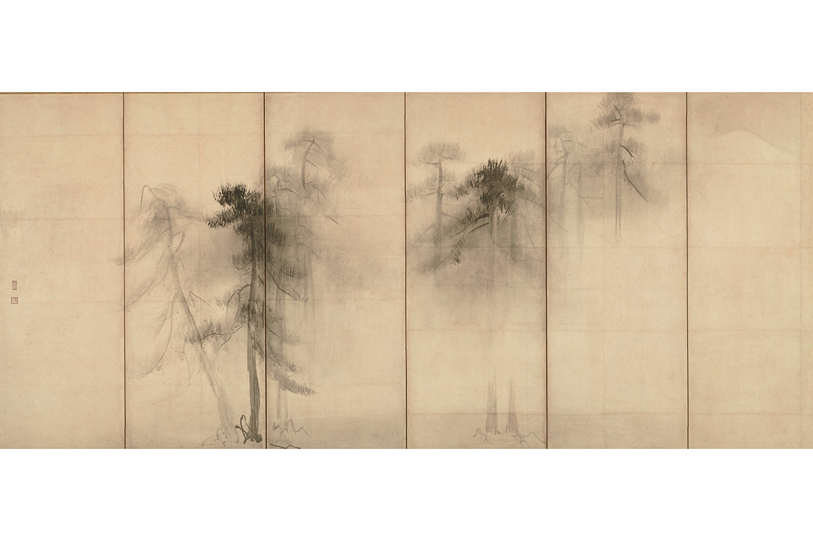
Одно из самых известных сокровищ музея это ширма «Сосновый лес» Тохаку Хасэгавы (1539–1610). Художник работал в эпоху Момояма и искал, как передать свет оттенками туши. По словам сотрудника музея, это главная работа мастера и вершина японской монохромной живописи нового времени.
В 2022 году, к 150-летию, музей впервые за всю историю показал на одной выставке все свои 89 национальных сокровищ. Выставка шла с 18 октября по 11 декабря 2022 года, экспозиция менялась, и, чтобы увидеть всё, на неё нужно было прийти три раза.
Хэйсэйкан
Археология из учебника
Хэйсэйкан открылся в 1999 году. Его строили с оглядкой на главное здание, чтобы новый корпус продолжал старый и не спорил с парком. На втором этаже проходят большие временные выставки, а на первом находится археологический зал. Вдоль стен идёт история от палеолита до эпохи Эдо, а в центре зала меняются тематические витрины. Здесь легко наткнуться на вещь, знакомую по картинке из школьного учебника, так что интересно будет и взрослым, и детям.
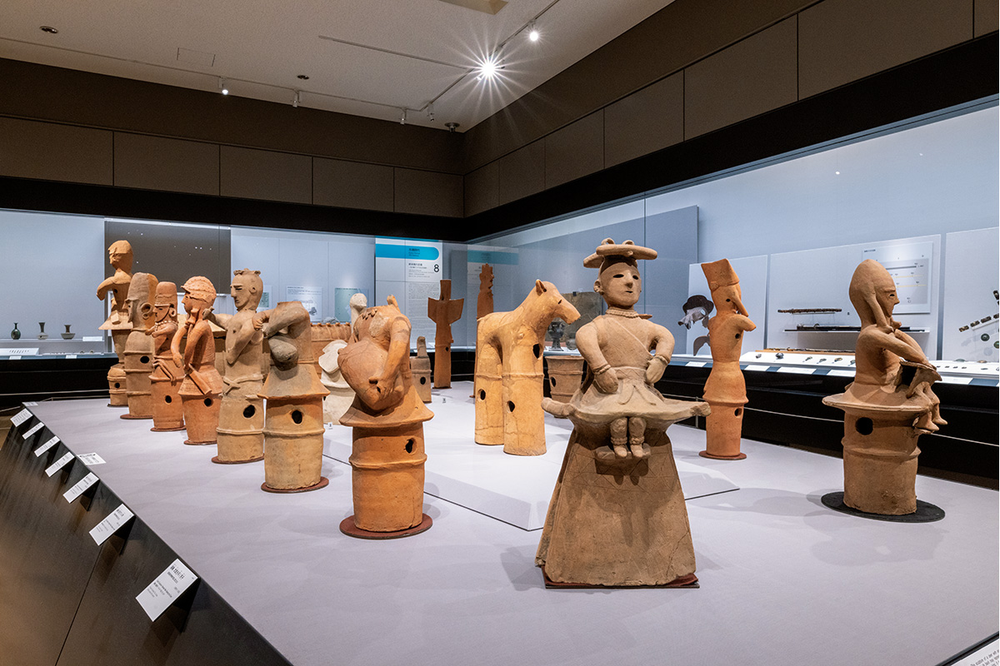
Пример такой встречи: ханива «Воин в доспехах». Ханива это глиняные фигуры, которые ставили на курганах в эпоху Кофун. Воин с ног до головы закован в доспехи, при нём длинный меч, лук и стрелы, и по нему видно, как выглядели воины востока Японии в VI веке. Рядом с местом находки нашли ещё несколько похожих фигур, поэтому считают, что там работала артель опытных мастеров.
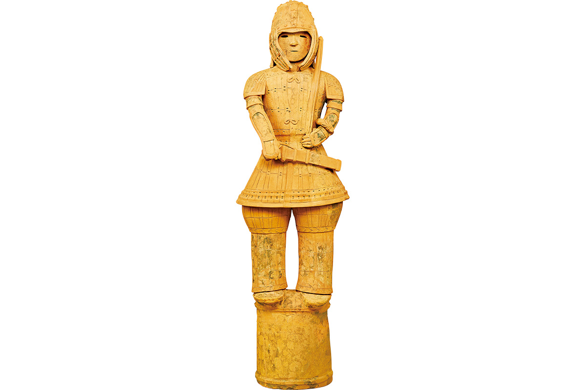
Хёкэйкан
Здание, которое само произведение искусства
Хёкэйкан открылся в 1909 году в честь свадьбы наследного принца, будущего императора Тайсё. Его спроектировал Токума Катаяма (1854–1917), придворный архитектор эпохи Мэйдзи. У здания три купола, в центре и по бокам, а на фасаде под крышей рельефы с чертёжными и музыкальными инструментами. Внутри не менее богато. Хёкэйкан тоже важная культурная ценность и одно из самых узнаваемых зданий эпохи Мэйдзи.
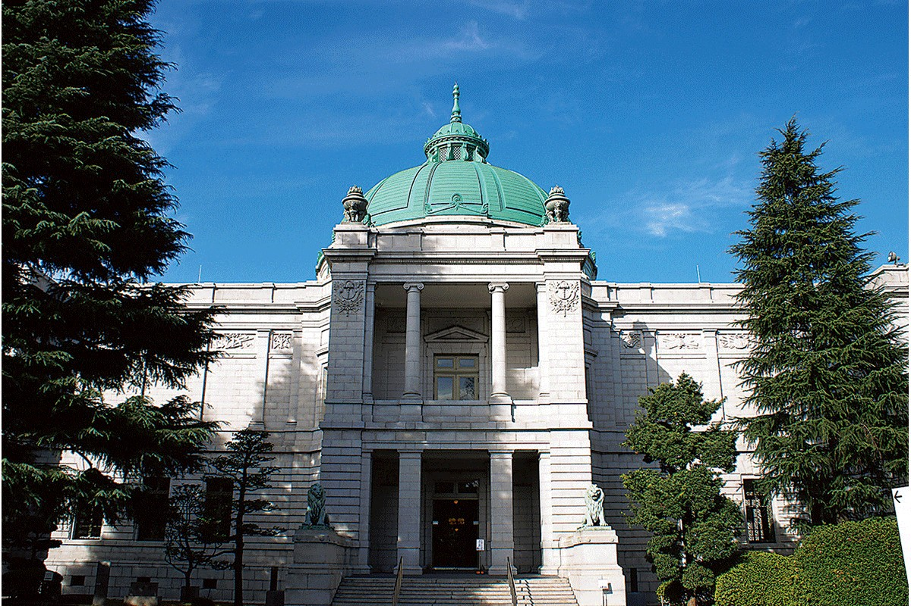
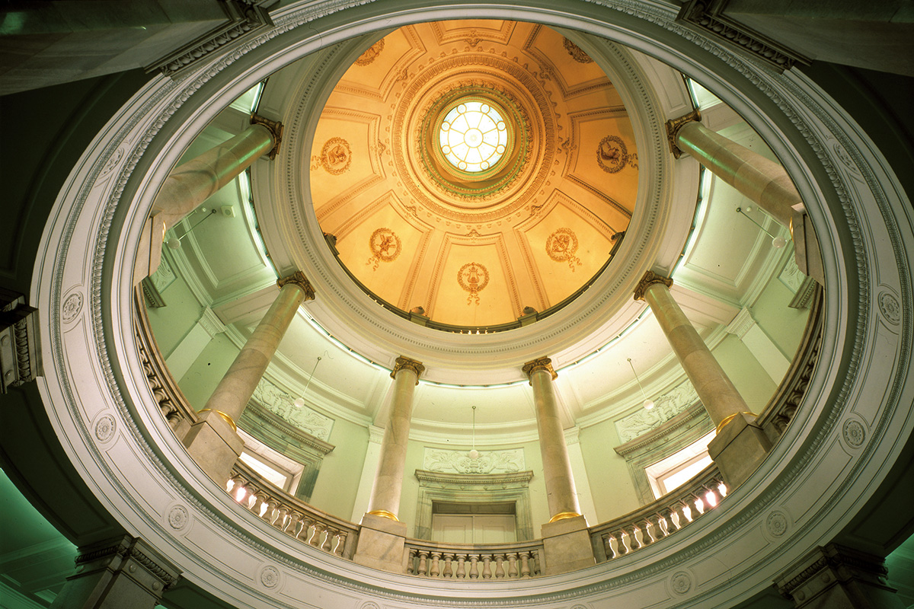
Хёкэйкан открывают только на время особых выставок и мероприятий, так что попасть внутрь удаётся не всегда.
Тоёкан
Путешествие по искусству Азии
Тоёкан, галерею азиатского искусства, спроектировал Ёсиро Танигути (1904–1979), один из главных японских архитекторов середины XX века. Здание открылось в 1968 году, а в 2013 году его обновили. Залы расположены уступами, на полэтажа выше друг друга, и, поднимаясь по ним, проходишь через Китай, Корейский полуостров, Юго-Восточную Азию, Индию и Египет: искусство, ремёсла, археологические находки.
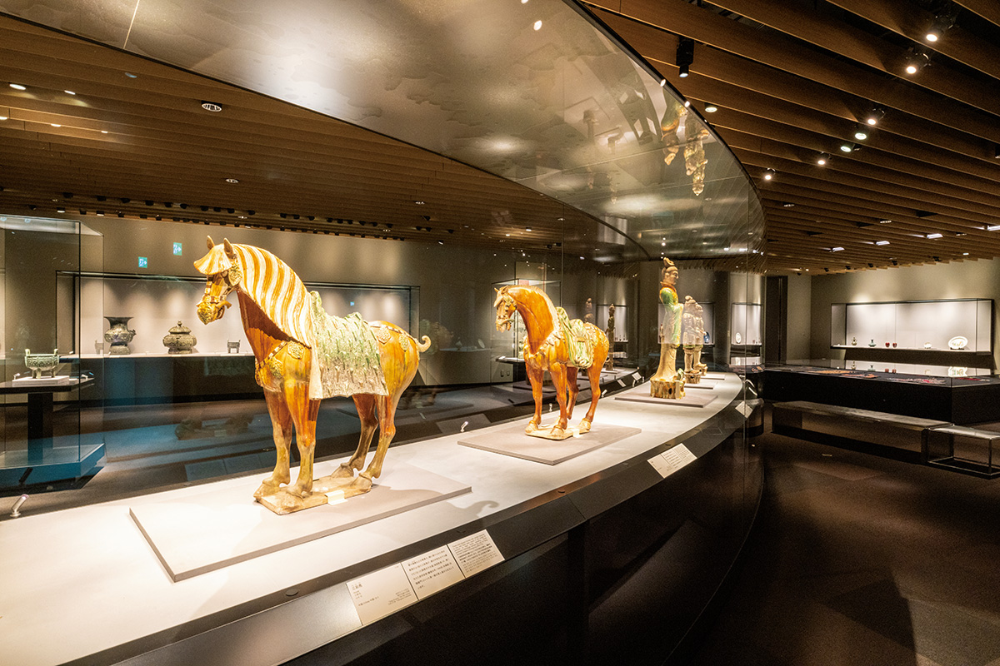
Одна из витрин в зале китайских бронзовых сосудов изогнута дугой. Здесь же хранится кувшин для воды из печей Цзиндэчжэня XVI века, расписанный красным и золотом. Такие вещи привозили в Японию, сравнивали с дорогой парчой и называли «кинрандэ», то есть «в манере золотой парчи». Каждую осень в Тоёкане проходит программа «Путешествие по Азии в музее»: в 2022 году её провели в девятый раз.
Хорю-дзи
Сокровища древнего храма
Галерею сокровищ храма Хорю-дзи спроектировал сын Ёсиро Танигути, архитектор с мировым именем Ёсио Танигути. Галерея открылась в 1999 году. Вход залит светом, а в залах наоборот темно: дневной свет вредит древним вещам, и сокровища стоят в полной тишине.
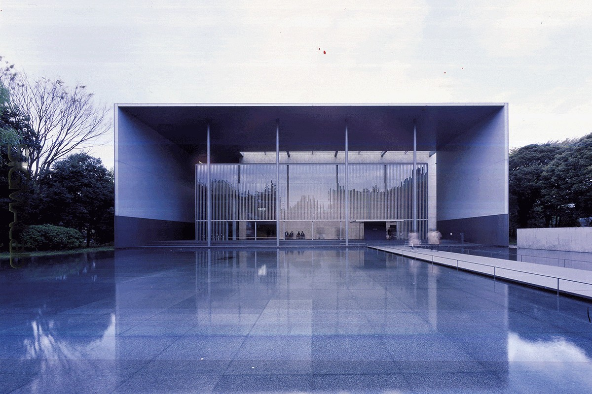
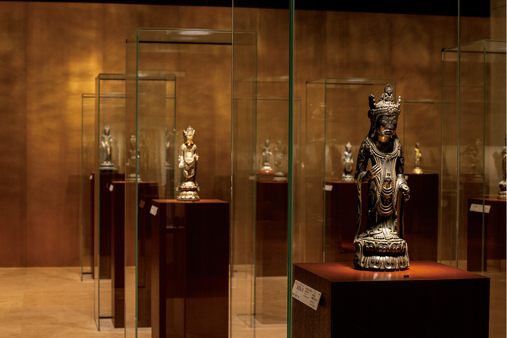
Хорю-дзи это древний буддийский храм в префектуре Нара. В 1878 году он передал часть своих сокровищ императорскому дому, после войны они стали государственными, всего их около 300. Среди них бронзовые будды, маски для танцев гигаку, рельефные изображения будд на металле, буддийская живопись, сутры и храмовая утварь. 11 предметов признаны национальными сокровищами, 182 важными культурными ценностями. Многие вещи относятся к VII веку, и это собрание ставят в один ряд с сокровищами хранилища Сёсоин.
Есть здесь и статуя «Майя и небесные существа» VII века. Она показывает легенду о рождении Будды: мальчик появился на свет из-под руки своей матери, царицы Майи, а вокруг небесные существа празднуют это событие. В собрании музея есть и три ложечки VIII века в форме лепестка лотоса, тыквы и ивового листа. По преданию, ими пользовался принц Сётоку (574–622), регент, который много сделал для распространения буддизма в Японии, когда писал толкования к сутрам.
Мемориальный зал
Сэйки Курода, отец японской масляной живописи
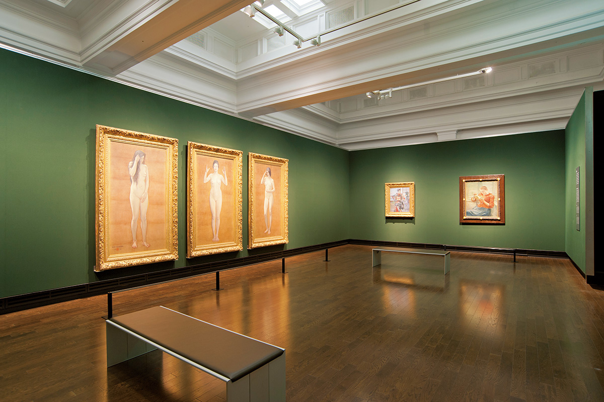
В западной части территории стоит Мемориальный зал Сэйки Куроды (1866–1924), художника, которого называют отцом японской живописи маслом в западном стиле. Зал построили на средства, которые Курода завещал для этого сам. Здание спроектировал Синъитиро Окада (1883–1932), взяв за образец дома средневековой европейской знати. В собрании около 130 картин маслом, около 170 рисунков и альбомы с набросками. В 2015 году зал обновили, а вход в него в 2021 году был бесплатным.
Сад
Пруд, чайные домики и пятиярусная пагода
За главным зданием, к северу, скрывается сад, о котором многие посетители даже не знают. В центре пруд, вокруг него пять чайных домиков. Весной здесь цветут сакуры нескольких сортов, летом лотосы, осенью желтеют гинкго и краснеют клёны.
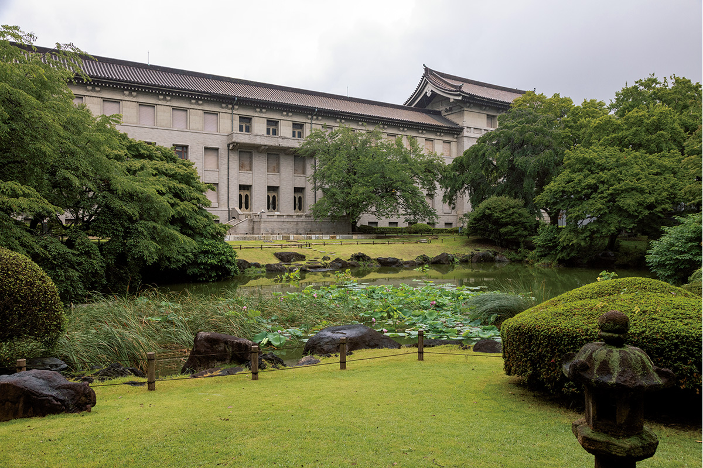
В саду стоит пятиярусная пагода, которую сёгун Цунаёси Токугава (1646–1709), пятый правитель из династии Токугава, преподнёс храму Хорю-дзи. Здесь же памятный камень второй Национальной промышленной выставки и стела в честь первого директора музея Хисанари Матиды (1838–1897).
Советы
Как смотреть музей
За один день всё не обойти, и стараться не нужно. Удобнее выбрать тему: история японского искусства, путешествие по Азии или путь буддийской скульптуры в Японию. Музей устраивает и сезонные программы: «Новогодний визит в музей», «Ханами в музее», «Путешествие по Азии в музее». На территории есть ресторан, кафе и музейный магазин.
Токийский национальный музей
- Адрес
- Токио, район Тайто, Уэно-коэн, 13-9
- Телефон
- +81 50-5541-8600
- Часы работы
- 9:30–17:00, вход до 16:30
- Выходные
- понедельник (если это праздник, то следующий будний день), бывают внеплановые закрытия и дни работы
- Цены / Вход
- 1000 иен, студенты университетов 500 иен, особые выставки оплачиваются отдельно, Мемориальный зал Куроды бесплатно
- Как добраться
- 10 минут пешком от станции Уэно (линия JR Яманотэ и другие)
- Сайт
- tnm.jp
Фото: Синсукэ Мацукава, ColBase.